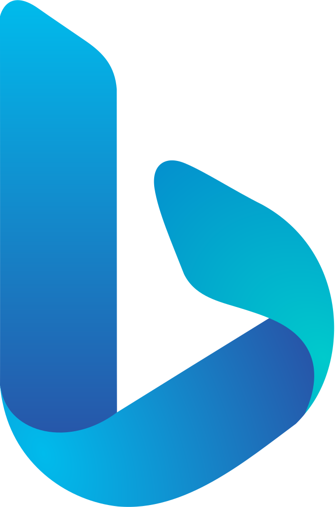

Що ти вже знаєш про мережі
Минулого уроку ти дізнався, як пристрої об'єднуються в мережі і де «живуть» сайти. Пригадай головне.
Обери поняття, а потім клацни пояснення, яке йому відповідає.
Як знайти потрібне серед мільярдів сторінок
Можна блукати посиланнями від сайту до сайту — але це дуже довго. Швидше запитати пошукову систему.
Пошукова система (пошукова служба) — сайт, який збирає інформацію з Інтернету, впорядковує її та допомагає швидко знайти потрібне.
Найвідоміші пошукові системи:


Це пошукова система?
Хто шукає замість тебе
Пошукова система не шукає по всьому Інтернету в ту мить, коли ти натиснув «Пошук». Вона все підготувала заздалегідь — працюють три помічники.
Переверни кожну картку.
Хто з помічників це робить?
Найголовніші слова
- Ключове слово — слово, яке найточніше описує те, що ти шукаєш.
- Запит — набір ключових слів, які вводять у поле пошуку.
Пошуковій системі не потрібні «привіт» чи «будь ласка» — їй потрібна суть.
Клацни в кожному реченні всі ключові слова. Зайві слова не чіпай!
Шукаємо крок за кроком
Будь-який пошук — це той самий порядок дій. Склади його.
Не лише сторінки
Під полем пошуку є вкладки. Вони показують знайдене в різному вигляді:
- Усі — сторінки з текстом;
- Зображення — фото й малюнки;
- Відео — ролики;
- Новини — статті про свіжі події;
- Карти — місця й маршрути.
Прочитай завдання й клацни вкладку Google, у якій шукатимеш.
Як скласти вдалий запит
- Пиши слова без помилок.
- Бери кілька точних слів, а не одне.
- Додавай уточнення: місто, рік, назву.
- Не знайшов — зміни слова або спробуй іншу пошукову систему.
Який запит найкращий?
Знайди відповідь сам
Склади запит із потрібних слів, натисни «Знайти» і обери сторінку, яка справді відповідає на питання.
Секретні знаки пошуку
- Лапки
"…"— знайти фразу точно так, як написано: ті самі слова, в тому самому порядку. - Мінус перед словом
-слово— прибрати сторінки, де є це слово. Пробілу між мінусом і словом немає.
Який запит допоможе?